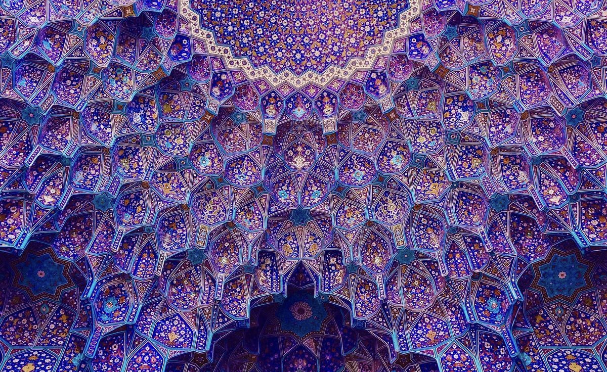
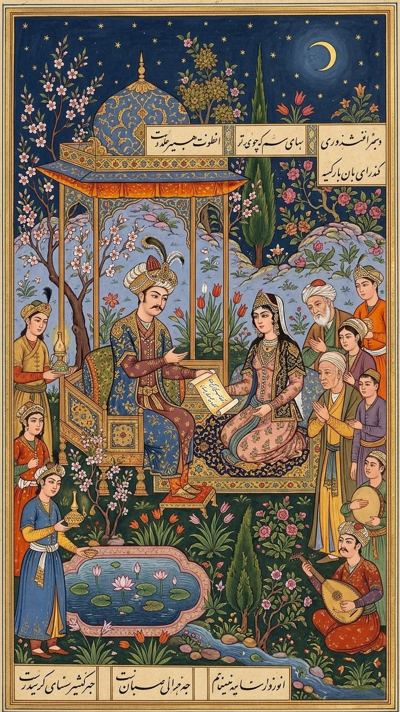
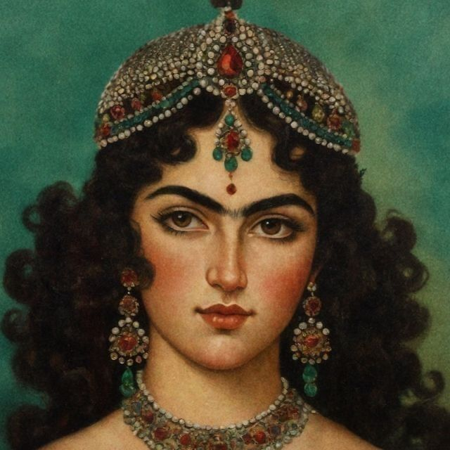
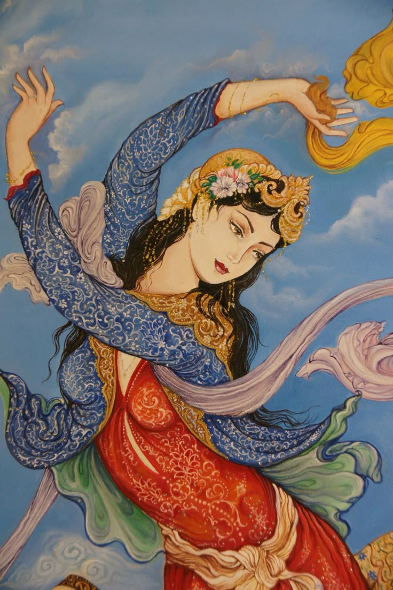
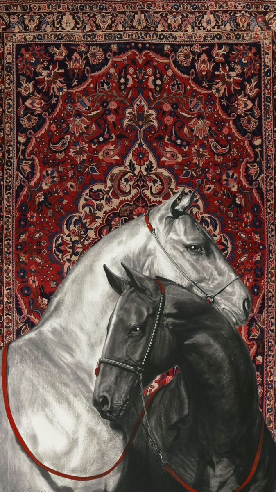
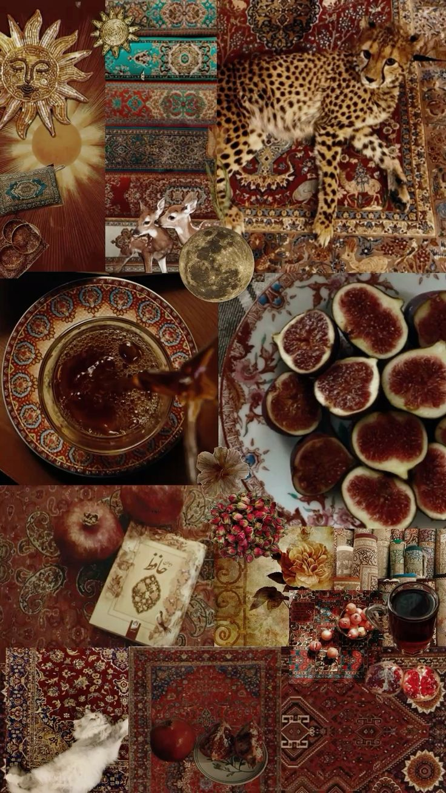
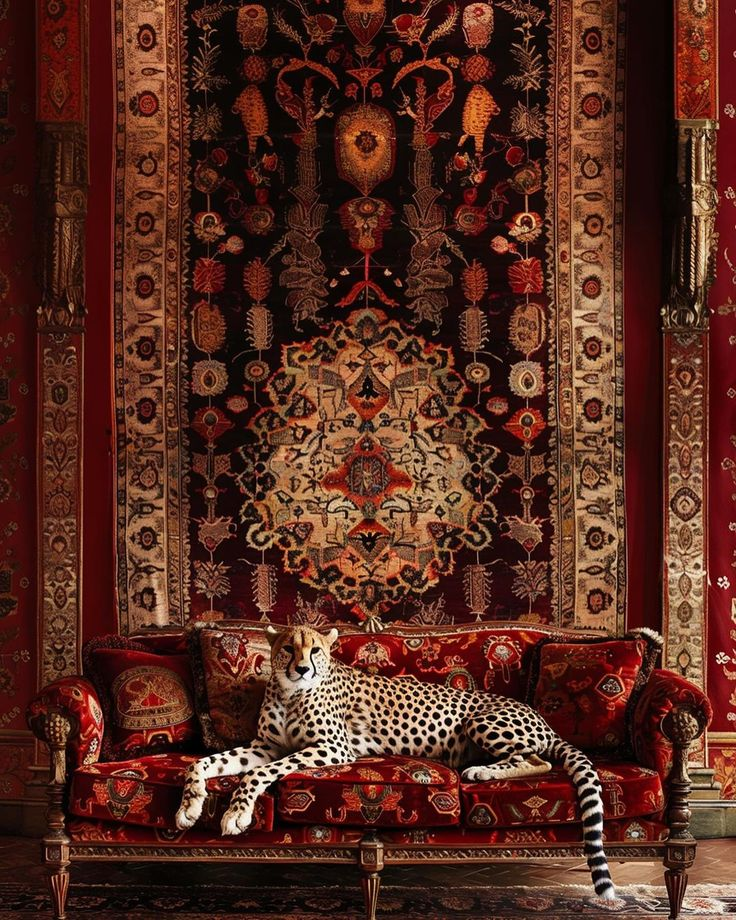
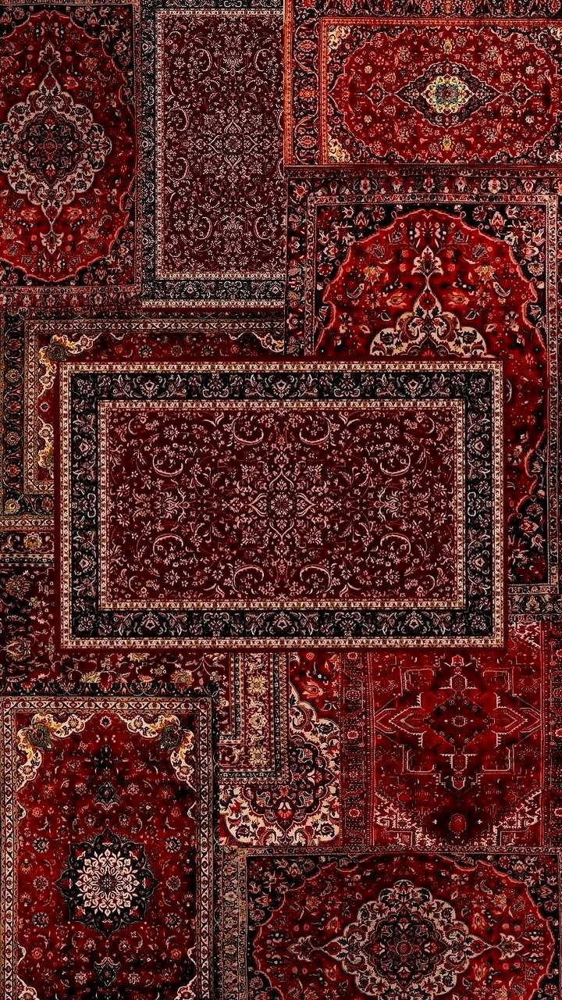

Persepolis
Fars · 6th century BCE
Ceremonial capital of the Achaemenid Empire, known for its great staircases, columns and stone reliefs.
A land of turquoise domes, woven gardens and poetry, with more than 2,500 years of Persian civilization.
Persian builders turned geometry into art: domes, tiled vaults, wind towers and gardens designed around water and shade.

Ceremonial capital of the Achaemenid Empire, known for its great staircases, columns and stone reliefs.
One of the world's largest squares, surrounded by the Shah Mosque, Sheikh Lotfollah Mosque and Ali Qapu Palace.
Honeycomb vaults made of hundreds of small tiled niches.
Mud-brick towers that cool houses and water cisterns without electricity.
A walled garden divided by water channels and planted with cypress, roses and pomegranate.
Vaulted market streets with courtyards and tea houses; the Tabriz Bazaar is among the largest covered markets in the world.
Persian art loves pattern, color and storytelling, and leaves no surface empty.
.jpg)




Hand-knotted rugs with central medallions, garden motifs and layered borders.
Fine brushwork in mineral pigments and gold, often illustrating the epics of Ferdowsi and Nizami.
A flowing script in which the letters themselves become drawings.
Glazed tiles that cover domes, portals and prayer halls.
Poetry is part of daily life; many families consult a book of Hafez for guidance.
Santur, tar, setar, ney and tombak play a tradition built on twelve modal systems.
Iranian life follows the seasons, blending ancient Persian roots with later traditions.
Families clean their homes and gather around the Haft-sin table, set with seven items starting with the letter S.
People jump over small bonfires to leave sickness behind.
Families picnic outdoors and throw the Haft-sin sprouts into running water.
Relatives stay up together eating pomegranates and watermelon and reading Hafez.


Classic things to bring home from an Iranian bazaar.

Iran grows most of the world's saffron, mainly in Khorasan.
Famous from Rafsanjan and Kerman.
Pistachio nougat from Isfahan and saffron brittle from Qom.
The classic heirloom; small prayer rugs pack easily.
Hand-painted enamel on copper, a specialty of Isfahan.
Hand block-printed cotton cloths and bags.
Boxes inlaid with tiny wood, bone and metal mosaics from Shiraz.
Mined near Neyshabur and set in silver jewelry.
Handwoven brocade from Yazd with paisley motifs.